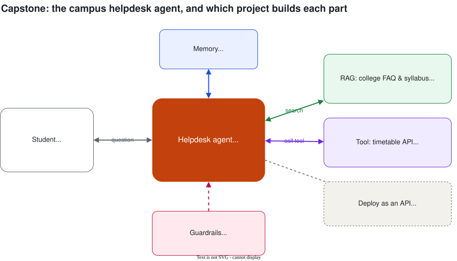

GenAI & Agentic AI: From Zero
Day 1 covers Generative AI and ends with a RAG chatbot. Day 2 covers Agentic AI and ends with a working campus helpdesk agent.
Day 1: Generative AI
How LLMs work
ML → deep learning → transformers; tokens, embeddings, context window, temperature, hallucination; open vs closed models.
Prompt engineering
Six parts of a good prompt; zero-shot, few-shot, chain-of-thought, system prompts, JSON output. Lab: weak vs strong prompts.
Building with LLM APIs
API keys, your first call, roles, chat memory, streaming, tokens and cost, rate limits. Lab: chatbot with memory.
RAG
Load, chunk, embed, store, retrieve, answer with citations; vector databases; testing. Lab: chat with the college FAQ.
Day 2: Agentic AI
From chatbots to agents
Brain, tools, memory, actions; the ReAct loop with a worked example; workflows vs agents. Activity: be the agent.
Tool calling and MCP
Function calling step by step, the agent loop in Python, a live weather API, and your own MCP server. Lab: timetable agent + MCP.
Agent frameworks & multi-agent
LangGraph, CrewAI and agent SDKs; orchestrator–worker, planner–executor, reviewer loop; human-in-the-loop. Lab: researcher + writer team.
Agents in production
Evals, tracing, cost and latency, safety; deploying as an API with FastAPI, Docker and Cloud Run. Activity: readiness review.
Projects
Six hands-on projects, one per lab, that build up to a campus helpdesk agent for your GitHub and resume.

Before you start
- A laptop with a browser and a Google account (we use Google Colab, so nothing to install).
- A free API key: Gemini (Google AI Studio) or Groq. No credit card needed.